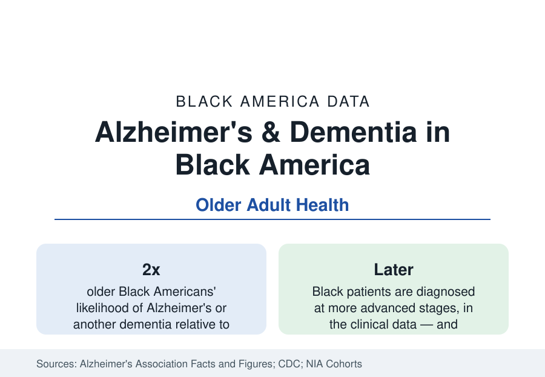

Black Public Health
Alzheimer's and Dementia Among Black Older Adults
Older Black Americans develop Alzheimer's and related dementias at roughly twice the rate of older White Americans — and are diagnosed later. The data.

Older Black Americans are about twice as likely as older White Americans to have Alzheimer's disease or another dementia, in the estimates the Alzheimer's Association compiles from the cohort literature — the widest prevalence gap of any major condition in this section. The number of Black Americans living with dementia, in the hundreds of thousands today, is projected to multiply as the Black senior population doubles on the census projections. And the official counts almost certainly understate the reality, because Black patients are diagnosed later and less often in the clinical data. This article reports the dementia data.
Prevalence and Its Measurement
Dementia prevalence comes from cohort studies that test cognition directly — the Health and Retirement Study and its sister cohorts are the backbone — rather than from diagnoses in medical records, and the distinction matters: the record-based counts miss more Black cases. The cohort estimates place dementia prevalence among Black adults over 70 at roughly one and a half to two times the White rate, with mild cognitive impairment showing a similar gradient. The measurement debate in the literature is real and worth recording: cognitive tests calibrated on majority populations can misclassify at the margins, and studies adjusting for education quality and literacy narrow the estimated gap somewhat — but every adjusted analysis in the literature leaves a substantial Black excess standing. Incidence studies (new cases per year) tell the same story, which rules out survival differences as the explanation.
Why: The Vascular Thread and the Life Course
The etiology research converges on accumulation. The same vascular risk stack that drives this section's heart and stroke data — hypertension above all, diabetes, midlife obesity — is independently associated with later dementia in the life-course cohorts, and it is present earlier and heavier in the Black population: midlife blood pressure, measured decades before symptoms, predicts old-age cognition in the long cohorts. Education enters through cognitive reserve: the quality-adjusted education measures (the segregated school era's documented resource gaps, in the oldest cohorts' biographies) predict test performance and diagnosis thresholds. The genetic factor most studied, the APOE e4 variant, raises risk in all populations but shows a weaker association in African-ancestry cohorts in the meta-analyses — the data's standing puzzle — while vascular and life-course factors carry more of the explainable share. The synthesis the field works from: dementia in Black America is substantially the late-life harvest of the midlife risk data in this section's earlier articles.
Diagnosis, Care, and the Trial Gap
The care pathway repeats the section's pattern with a diagnostic twist. Black patients' dementias are identified later — at more advanced stages at first diagnosis in the clinic data — and are more likely to be recorded as unspecified dementia rather than a specific Alzheimer's diagnosis, which gates access to the disease-specific therapies and trials. Specialist access (neurology, neuropsychology, memory clinics) runs through the same geography as the rest of specialty care. Clinical trial participation is the research layer's known gap: Black participants form a small fraction of Alzheimer's trial enrollment relative to the disease burden — a few percent in many trials — which the field's funders now treat as a validity problem, since the new anti-amyloid therapies' performance in the population with the highest prevalence is the least measured. Blood biomarker testing, which lowers the diagnostic barrier, is the technology whose rollout the equity literature is watching.
Caregiving: The Family System Carries It
Dementia care in America is family care, and the caregiving data describe Black families carrying the heaviest version of it. Black caregivers provide more hours of care on average than White caregivers in the national caregiving surveys, are more likely to be caring for a parent or grandparent within the multigenerational households of the census data, report higher rates of coresidence with the care recipient, and use formal support services (respite, adult day programs, paid aides) at lower rates — against, in the same surveys, equal or higher reported positive appraisal of the caregiving role. The economic data put the cost plainly: dementia is the most expensive condition of old age in the lifetime cost studies, and its costs fall on the household balance sheets least able to absorb them in the wealth distribution. Nursing home use, historically lower among Black families, has converged upward in the recent data as the senior population's care needs intensify.
Reading the Dementia Data
The dementia profile is the public health section's longest shadow: a doubling population of Black seniors meeting a condition at twice the prevalence, diagnosed late, treated within the thinnest asset base, and cared for by the family structures the census section documents. Its numbers argue their own priority: the midlife risk control that would bend this curve sits in articles already written in this section — the dementia data are what those numbers are ultimately for.
More in Black Public Health
Hypertension Among Black Adults: Prevalence, Control, and Consequences
About 55 percent of Black adults have hypertension — the highest rate of any U.S. group. Prevalence, onset, control, and the stroke, heart, and kidney consequences in the data.
Diabetes Among Black Adults: Prevalence and Complications
Nearly one in five Black adults has diabetes, diagnosed or undiagnosed — and its complications fall with particular weight. The CDC data on prevalence, control, and outcomes.
Black Life Expectancy: The Gap at Birth and Its Causes
Black life expectancy at birth is about 73 years, roughly five years below the national figure — the summary measure of every health gap in this section. The CDC data.
Source: Alzheimer's Association, Alzheimer's Disease Facts and Figures; CDC Healthy Aging Data; National Institute on Aging cohort studies.